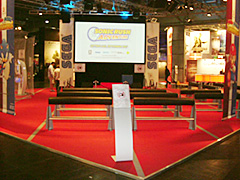

「クリエイターズ インタビュー」 第19回目は、
SOE（セガ オブ ヨーロッパ）で『ソニック ラッシュ アドベンチャー』のマーケティングを担当したミシェル ディックスを紹介！
プロフィール：
Michele Dix（ミシェル ディックス）
SOE (Sega of Europe)/ 部署: ブランドマーケティング
2006年8月にSOEに入社。
欧州市場に向けたソニックシリーズのマーケティングを主に担当している。
今回は、SOE（セガ オブ ヨーロッパ）で『ソニック ラッシュ アドベンチャー』のマーケティングを担当したミシェルさんにお話しを伺いたいと思います。まず、ミシェルさんはどのようなお仕事を担当されているか、ご説明いただけますでしょうか？
はい！
SOE（セガ オブ ヨーロッパ）のミシェルと申します。どうぞよろしくお願いいたします。
欧州（ヨーロッパ）での販売に向けて、マーケティング戦略や材料を揃えるのが私の仕事です。
欧州と一言で言っても、欧州全体ですから各国それぞれが持っている規則やルールなどに沿って考えなければなりません。日本やアメリカだけではなく、欧州全体の窓口になっていますので、業務の範囲はとても広いと言えます。
通常、私はゲームが開発中の段階から発売されるまでを見ていますので、それぞれの段階ごとに消費者に向けたコミュニケーション戦略、パッケージ、広告、宣伝活動の調整、オンライン、ソニックコミュニティーの活動、販促物、店頭素材、など広範囲に渡った業務に携わりながら、各地域のマーケティング担当者に充分に素材が行き渡り、それぞれの市場にしっかり沿った形でのマーケティングが行えるように調整を行なっていきます。
また、各地域のことを知っていなければならないのはモチロンのこと、それ以前に私自身が“ソニック”のことを深く知っていなければなりません。
今回の作品の見どころはどこでしょうか？
そうですね。私から見た『ソニック ラッシュ アドベンチャー』の見どころはやはり2Dのゲームプレイだと思います。エキサイティングで色鮮やかな多種に渡る環境（ステージ）とデュアルスクリーンとの組み合わせは最大限にこのゲームの良さを引き出していると思います。
ソニックをこれまでもずっと有名にしてきた“スピード”と2Dのゲーム性との組み合わせもまた、クラシックな遊びを最新のゲーム機で最大限に味わうことを可能にしていると思います。
『ソニック ラッシュ アドベンチャー』の評判はいかがでしょうか？
前作の『ソニック ラッシュ』は欧州でも高い売り上げを誇っています。前作の高い評価もあり、今回の『ソニック ラッシュ アドベンチャー』は発売前から多くの方から期待されていました。前作の評価を受け継ぐというのは続編ものではとても大きなチャレンジなのではないかと思いますが、『ソニック ラッシュ アドベンチャー』は大成功でした。
欧州のメディアの評価は高く、Official Nintendo Magazine (UK)からは92%という高得点をいただきました。また、その他のゲームサイトについては平均8/10点をいただいております。これは前作と同く、とても高いスコアになります。
多くの消費者は、評価点やレビューに書かれているコメントを見てゲームを買うか買わないかを決めるため、欧州市場において、評価点はとても重要なものなのです。
ヨーロッパではどのようなマーケット展開が行なわれたのですか？
メディアと消費者に効果的に訴えかける為にも、鍵となるキャラクターとゲームのテーマを最大限に活かしたビジュアル的に力強いキャンペーンにしたいと考えました。
その為には、定期的な素材の提供（画面写真やキャラクターアート）や、ゲーム情報の提供を行うなどのPR（プロモーション）プランが必要でした。PRは、定期的に人をひきつける素材を提供し続けるということは、ゲームを欧州で成功させる上でとても重要になります。
SOAと協力をしながら、私は店頭用のバナー、広告、ゲームプレイ映像、販促物や質の高いトレイラーの準備などの考案・作成に携わりました。
欧州ではインターネットはゲームのプロモーションを行う上で大変重要なツールになります。最近では多くの若者や低年齢層の消費者はインターネットを介して情報収集します。
『ソニック ラッシュ アドベンチャー』では、オンライン面に集中した形で様々な企画を立てました。ウェブサイトの構築、ミニゲーム、バナー、オンライン上でのプチ大会に加え、Nintendo Europeのサポートがもらえるようにも努力しました。
そして、次にマーケティングとして重視したのが小売店へのアプローチでした。ポスター、店頭用の立体素材、棚の装飾用の素材、シールなどを店頭内のあちらこちらに飾ることにより消費者の目を最大限に惹こうというのが狙いでした。これらは全て、欧州の様々な地域の市場に向けて企画されたものでした。
●イベント
欧州の各地域（国）にて様々なイベントが行われます。ターゲットを小売店向けにしたものから、ユーザー様向けのものまで色々あります。イベントの規模、季節や状況によってイベントがどのように行われるかは違ってきますね。
例えば、Christmas in Julyはイギリスで行われたイベントでオンラインや印刷媒体であるプレス（メディア）向けのものでした。クリスマス商戦に向けて、一押し商品のアピールをする場でもあります。
ラインアップの中で、『ソニック ラッシュ アドベンチャー』と『マリオ＆ソニック AT 北京オリンピック』の発表が行われました。このイベントは、ゲームだけではなくおもちゃや文房具、カメラなど様々なジャンルのものをクリスマスに向けて発表する場所でもありました。
ドイツでは、毎年恒例のGames Conventionがライプチヒで行われました。欧州全体からメディアと小売店が集まり、彼らをターゲットにしたイベントです。『ソニック ラッシュ アドベンチャー』はトレイラーやゲームプレイデモを初め、ブローシャー（配布されたパンフレット）などを通じて公開されました。
写真に写っている大画面にてトレイラーが流されました。
イベントの中にはPR向けを目的としたものもあります。メディアを盛り上げ、我々のゲームについて良い記事を書いていただけるようにするためのものです。欧州の各地では、記者向けにゲームのテーマに即したイベントを企画したりします。
例えば、イギリスでは「『ソニック ラッシュ アドベンチャー』の日」というのを設け、イギリスで有名なジェットスキーのチャンピオンに参加してもらい、記者の方にゲームで実際に行われる技などをもっと良く理解してもらう為に実演をしてもらいました。
このイベントはイギリスでも有名な新聞の記事にもなったんですよ。
また、プロモーションとして、GAME MASTERというドイツの雑誌がニンテンドーDSの缶ケースを作ってくれました。
ヨーロッパでのソニックの人気はすごく、色々な商品なども作られているとお聞きします。ヨーロッパで制作したソニック関連商品をご紹介いただけますか？
ソニックは根強い人気を誇るとても有名なゲームのキャラクターです。販促物を求める人が後を発たないことでもそのファンの多さを物語っています。
『ソニック ラッシュ アドベンチャー』では、ゲームに関連した多くのプロモーショングッズを作成しました。その多くは、小売店やメディアが読者へのプレゼントとして使用しています。
ゲーム発売時には、子供達が丁度夏休みを終え学校に戻る時期だったことから、子供向けにゲームのテーマと絡めてキャンプ用のテント、リュック、懐中電灯、飲料ボトルホルダー、コンパス、Tシャツなどを作りました。これらのグッズは、様々な大会の賞品として、また『ソニック ラッシュ アドベンチャー』をより多くの人に知って頂くのにとても役立ったのではないかと思います。